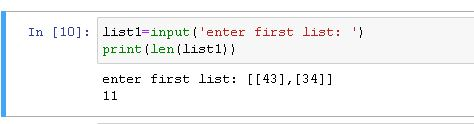
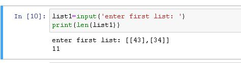
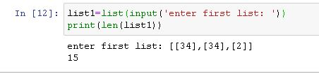

בתרגיל מיקומים אני קולט מחרוזת דרך INPUT ובהפעלת פונקציית LEN לא מקבל את מספר האיברים


בתרגיל מיקומים אני קולט מחרוזת דרך INPUT ובהפעלת פונקציית LEN לא מקבל את מספר האיברים

אתה מקבל את מספר התווים כי הקלט שלך הוא מחרוזת
גם שאני משנה את הקלט לlist זה לא נפתר

תדפיס את list1 ותראה מה מקור הבעיה 
רק סיבך אותי … 
איך לסנן את הפסיקים והסוגריים
תודה!
אפשר עוד רמז… זה משגע אותי
אני יוצא מהנחה שקולטים את הנתונים עם הסוגריים…
על פי ההסבר של ים אין צורך באינפוט… אז איך אמורים ליצור את הרשימה הפנימית?\
המתודה list() לא עושה המרה של מחרוזת לרשימה במובן בו חשבת עליו (בניגוד ל-int() או float() שכן יעשו המרה ל-int או float בהתאמה, בהינתן קלט מתאים). אפשר ללמוד כאן עוד על המתודה: https://www.programiz.com/python-programming/methods/built-in/list
תוכל במקום זה להשתמש במתודה של פייתון על מחרוזות שיודעת לפצל מחרוזת לרשימה. 
אין צורך לקבל קלט מהמשתמש בשאלה הזו. אף אחד לא ביקש את זה בשאלה